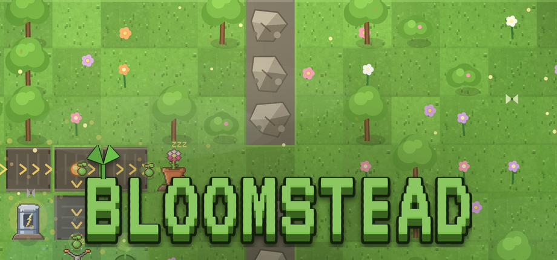

BLOOMSTEADa cozy automation game
The world has gone quiet. Harvest sap, build small machines, and let your factory bring the bloom back, tile by tile. The reward is watching a dead world turn green again.

Trailer
Trailer music: “Wholesome” by Kevin MacLeod (incompetech.com), CC BY 4.0.
What's inside
- Nine machines that chain into small production lines: extractors, belts, bloomers, greenhouses, splitters, dynamos, sprinklers, tunnels and pumps.
- A handmade campaign, then endless generated islands, all of them solvable. A daily challenge keeps your best times.
- Nine biomes, each with its own palette: meadow, autumn, tundra, dusk, jungle, sakura, emerald, desert and coral.
- You can also plant by hand. Carry a seed anywhere; the machines do the scale, your hands do the details.
- Permanent upgrades, achievements, stats, and a free garden mode with decorations and a photo mode.
- No timers and no failure. Removing a machine refunds it in full, so you can never get stuck.
- English and French, remappable keys, a reduced-motion option, full touch support.
Screenshots
{kind=link}
{kind=link}
{kind=link}
{kind=link}
{kind=link}
{kind=link}
En français
Le monde s'est éteint. Récolte la sève, assemble de petites machines et laisse ton usine faire refleurir la terre, case après case. Neuf machines, neuf biomes, une campagne faite main puis des îles à l'infini, un défi du jour, un jardin libre. Jamais d'échec : la récompense, c'est de voir le monde reverdir. Le jeu est entièrement traduit en français.
Where to play
| Platform | Status |
|---|---|
| PC (Steam, itch.io) | In preparation |
| Android (Google Play) | In preparation |
| Browser (web portals) | In preparation |
The Steam page is in the works. The wishlist link will appear here as soon as it is live.